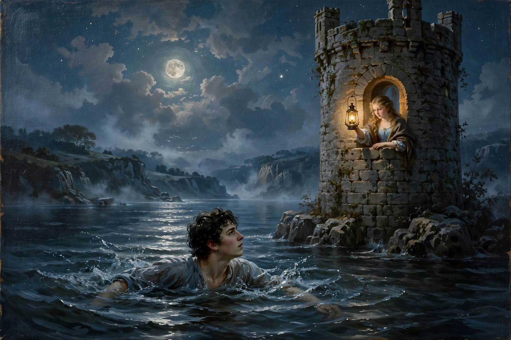

Hero and Leander (poem)
Hero and Leander is a poem by Christopher Marlowe that retells the Greek myth of Hero and Leander: Hero, a priestess of Aphrodite at Sestos, and Leander of Abydos, who swims the Hellespont each night guided by her lamp. Marlowe left the poem unfinished at his death in 1593; it was completed by George Chapman and published in 1598.

Contents
Marlowe's portion, divided into two "sestiads", covers the lovers' meeting at the festival of Adonis in Sestos, Leander's wooing speech (including the famous argument that "Who ever loved, that loved not at first sight?"), his first swim across the strait — during which Neptune mistakes him for Ganymede — and the consummation of their love at dawn. Chapman's four continuation sestiads carry the story on to the tragic ending, in which Leander drowns in a storm and Hero leaps to her death.
Style and influence
Written in heroic couplets, the poem is the finest English example of the Ovidian epyllion or "minor epic" fashionable in the 1590s. Its wit, eroticism and mythological digressions influenced Shakespeare, whose As You Like It quotes Marlowe's most famous line, and the poem's celebration of desire over custom has kept it central to Marlowe's reputation as a poet, distinct from his fame as a dramatist.